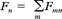

Network based model of social media big data predicts contagious disease diffusion
- Author(s):
- Abstract:
Purpose
Predicting future outbreaks and understanding how they are spreading from location to location can improve patient care provided. Recently, mining social media big data provided the ability to track patterns and trends across the world. This study aims to analyze social media micro-blogs and geographical locations to understand how disease outbreaks spread over geographies and to enhance forecasting of future disease outbreaks.
Design/methodology/approach
In this paper, the authors use Twitter data as the social media data source, influenza-like illnesses (ILI) as disease epidemic and states in the USA as geographical locations. They present a novel network-based model to make predictions about the spread of diseases a week in advance utilizing social media big data.
Findings
The authors showed that flu-related tweets align well with ILI data from the Centers for Disease Control and Prevention (CDC) (p < 0.049). The authors compared this model to earlier approaches that utilized airline traffic, and showed that ILI activity estimates of their model were more accurate. They also found that their disease diffusion model yielded accurate predictions for upcoming ILI activity (p < 0.04), and they predicted the diffusion of flu across states based on geographical surroundings at 76 per cent accuracy. The equations and procedures can be translated to apply to any social media data, other contagious diseases and geographies to mine large data sets.
Originality/value
First, while extensive work has been presented utilizing time-series analysis on single geographies, or post-analysis of highly contagious diseases, no previous work has provided a generalized solution to identify how contagious diseases diffuse across geographies, such as states in the USA. Secondly, due to nature of the social media data, various statistical models have been extensively used to address these problems.
- Keywords:
- Prediction, Big data analysis, Influenza dissemination, Information networks, Network model, Social media data
- Type:
Research Paper - Publisher:
- Emerald Publishing Limited
- Received:
- 01 May 2017
- Revised:
- 06 July 2017
- Accepted:
- 07 July 2017
- Acknowledgments:
The authors would like to thank David Wise for thoughtful discussions and bringing this problem to our attention. This research was partially supported by a Grant from NIH/NCRR CTSA KL2TR000440 to GB.
- Copyright:
- © Emerald Publishing Limited 2017
Published by Emerald Publishing LimitedLicensed re-use rights only - Citation:
- Lauren S. Elkin, Kamil Topal, Gurkan Bebek, (2017) "Network based model of social media big data predicts contagious disease diffusion",
Information Discovery and Delivery , Vol. 45 Issue: 3, pp.110-120, https://doi.org/10.1108/IDD-05-2017-0046 - Downloads:
- The fulltext of this document has been downloaded 158 times since 2017
Define graphs G1 and G2 from networks A and B, respectively, from Figure 5 as G1 = (V,E1) and G2 = (V,E2). In other words, G1 is the planar network representing the lower 48 states of the USA geographically, and G2 is the network derived from G1. Both graphs have the same set of vertices, V. However, E1 ⊆ E2 because E2 contains edges corresponding to both one-hop and two-hop neighbors of V in G1.
Using rquation (4) or edge weights, calculate the unscaled predicted tweet counts, Pu,t + 1, using the most-recent weekly tweet counts until week t, using the following equation: ∀u ∈ V :
where Pu,t + 1 is a state’s unscaled predicted tweet count for the upcoming week (t + 1), (v,u) ∈ E1 refers to all incoming edges for state u that correspond to one-hop neighbors, n refers to the number of incoming edges for state u that correspond to one-hop neighbors, (v,u) ∈ E2 − E1 refers to all incoming edges for state u that correspond to two-hop neighbors, m refers to the number of incoming edges for state u that correspond to two-hop neighbors and wvu is the weight of edge (v,u).
Now find cs, the scaling factor. cs is crucial for our calculations because adding ∑(v,u) ∈ E1wvu/n and ∑(v,u) ∈ E2 − E1wvu/m causes the predictions to be greater than the actual levels. However, it is necessary to add both of those terms to obtain more detail about how outbreaks are spreading geographically. cs is the ratio of the average of weekly unscaled predictions, Pu,t + 1, for all states to the average of the actual weekly tweet counts for all states. The larger cs is, the more influence geographical surroundings had on a location’s disease activity in that particular time frame. cs ranges between 1 and 2 per data set. For example, the value of cs for our collected data from the 2013-2014 season was 1.902.
Once cs is found, find each of the lower 48 states’ scaled predicted tweet counts using the following equation: ∀u ∈ V:
where Tu,t + 1 is a state’s scaled predicted tweet count (the value used for the actual predictions), Pu,t + 1 is a state’s unscaled predicted tweet count for the upcoming week [using equation (5)] and cs is the scaling factor. Tu,t + 1 is what we use for the actual predictions.
Select V′ ⊆ V. of states such that V′ = {u ∈ V: levelu,t + 1 > levelu,t}. levelu,t + 1 is u’s predicted tweet count mapped to its ILI activity level [see equation 3)] for the upcoming week, and levelu,t is the current actual CDC level of u.
∀u ∈ V′, ∀v ∈ Adj(u) find vmax that yields max(wvu) using equation (4). This is the largest direct neighbor influence for each state that is expected to have increased disease activity. Place all (u, vmax) pairs for all u ∈ V′ in a new set, I.
Remove all (u, vmax) ∈ I where levelv,t ≤ 2 because if the CDC level for vmax for the current week is small and vmax is the largest influencer for u’s predicted increase in ILI activity for the upcoming week, then u should not be expected to increase by a critical margin. The remaining set, I, are tuples, where vmax is the source and u is the target of a directed edge that predicts an increased activity.
- References
- 1.Achrekar, H., Gandhe, A., Lazarus, R., Yu, S.H. and Liu, B. (2011), “Predicting flu trends using Twitter data”, Computer Communications Workshops (INFOCOM WKSHPS), IEEE Conference On. [Crossref]
 , [Google Scholar] 2.Bollen, J., Mao, H. and Zeng, X.J. (2011), “Twitter mood predicts the stock market”, Journal of Computer Science, Vol. 2, pp. 1-8. [Crossref], [Google Scholar] 3.Brockmann, D. and Helbing, D. (2013), “The hidden geometry of complex, network-driven contagion phenomena”, Science, Vol. 342 No. 6164, pp. 1337-1342. [Crossref], [Google Scholar] [Infotrieve]4.Broniatowski, D.A., Paul, M. and Dredze, M. (2013), “National and local influenza surveillance through Twitter: an analysis of the 2012-2013 influenza epidemic”, PLOS One, Vol. 8 No. 12. [Crossref], [Google Scholar] [Infotrieve]5.Bureau US Census (2012), “Computer and internet access in the United States: 2012”, available at: www.census.gov/hhes/computer/publications/2012.html (accessed 19 October 2014).[Google Scholar] 6.Centers for Disease Control and Prevention (2011), “Seasonal influenza-associated hospitalizations in the United States”, 24 June, available at: www.cdc.gov/flu/about/qa/hospital.htm (accessed 18 July 2014).[Google Scholar] 7.Centers for Disease Control and Prevention (2013), “Flu symptoms & severity”, 12 September, available at: www.cdc.gov/flu/about/disease/symptoms.htm (accessed 16 July 2014).[Google Scholar] 8.Centers for Disease Control and Prevention (2014a), “CDC: FluView”, available at: http://gis.cdc.gov/grasp/fluview/main.html (accessed 17 July 2014).[Google Scholar] 9.Centers for Disease Control and Prevention (2014b), “Overview of surveillance in the United States”, 16 July, available at: www.cdc.gov/flu/weekly/overview.htm (accessed 20 July 2014).[Google Scholar] 10.Developers (2014), “Twitter: Twitter API documentation”, available at: https://dev.twitter.comp/docs (accessed 16 July 2014).[Google Scholar] 11.Dredze, M., Paul, M., Bergsma, S. and Tran, H. (2013), “Carmen: a Twitter geolocation system with applications to public health”, AAAI Workshops.[Google Scholar] 12.Granovetter, M. (1978), “Threshold models of collective behavior”, American Journal of Sociology, Vol. 83 No. 6, pp. 1420-1443. [Crossref], [Google Scholar] [Infotrieve]13.Health CNN (2014), “Flu season may be heading toward peak”, 1 October, available at: www.cnn.com/2014/01/10/health/cdc-flu-activity/[Google Scholar] 14.Hirose, H. and Wang, L. (2012), “Prediction of infectious disease spread using Twitter: a case of influenza”, Proceedings of the 2012 Fifth International Symposium on Parallel Architectures, Algorithms and Programming, Washington, DC. [Crossref], [Google Scholar] 15.Official Airline Guide (2015), available at: www.oag.com/ (accessed 3 August 2015).[Google Scholar] 16.Lamb, A., Paul, M.J. and Dredze, M. (2013), “Separating fact from fear: tracking flu infections on Twitter”, HLT-NAACL.[Google Scholar] 17.Lampos, V. and Cristianini, N. (2010), “Tracking the flu pandemic by monitoring the social web”, Cognitive Information Processing (CIP), 2010 2nd International Workshop On, IEEE. [Crossref], [Google Scholar] 18.Lampos, V., De Bie, T. and Cristianini, N. (2010), “Flu detector-tracking epidemics on Twitter”, Machine Learning and Knowledge Discovery in Databases.[Google Scholar] 19.Lee, J. (2014), “Twitter predicts when you are sad, Hungover, late”, available at: www.usatoday.com/story/news/nation-now/2014/03/11/twitter-sad-happy-late-work/6283655/ (accessed 17 July 2014).[Google Scholar] 20.Merriam-Webster Inc (2017), Merriam-Webster’s Medical Dictionary, Merriam-Webster, MA.[Google Scholar] 21.Miniwatts Marketing Group (2010), “Internet world stats”, United States of America internet and Facebook users stats, available at: www.internetworldstats.com/stats26.htm (accessed 16 July 2014).[Google Scholar] 22.O’Connor, B., Balasubramanyan, R., Routledge, B.R. and Smith, N.A. (2010), From Tweets to Polls: Linking Text Sentiment to Public Opinion Time Series, ICWSM, Washington, DC.[Google Scholar] 23.Paul, M.J. and Dredze, M. (2011), You are What you Tweet: Analyzing Twitter for Public Health, ICWSM, Washington, DC.[Google Scholar] 24.Pyle, G.F. (1986), The Diffusion of Influenza: Patterns and Paradigms, Rowan Littlefield, Lanham.[Google Scholar] 25.Rogers, J. and Bodenreider, O. (2008), “Snomed CT”, available at: www.ihtsdo.org/snomed-ct (accessed 16 July 2014).[Google Scholar] 26.Sadilek, A., Kautz, H. and Silenzio, V. (2012), “Predicting disease transmission from geo-tagged micro-blog data”, AAAI Conference on Artificial Intelligence.[Google Scholar] 27.Salathe, M. and Khandelwal, S. (2011), “Assessing vaccination sentiments with online social media: implications for infectious disease dynamics and control”, PLoS Computational Biology, Vol. 7, p. e1002199. [Crossref], [Google Scholar] 28.Schuirmann, D.J. (1987), “A comparison of the two one-sided tests procedure and the power approach for assessing the equivalence of average bioavailability”, Journal of Pharmacokinetics and Biopharmaceutics, Vol. 15 No. 6, pp. 657-680. [Crossref], [Google Scholar] [Infotrieve]29.Statistic Brain (2014), “Twitter statistics”, available at: www.statisticbrain.com/twitter-statistics/ (accessed 16 July 2014).[Google Scholar] 30.Services (2014), “US department of health and human”, Symptoms of the Flu, available at: www.flu.gov/symptoms-treatment/symptoms/ (accessed 16 July 2014).[Google Scholar] 31.Services (2015), “US department of health and human”, Seasonal Flu, available at: www.flu.gov/about_the_flu/seasonal/index.html (accessed 3 August 2015).[Google Scholar] 32.Sinha, S., Dyer, C., Gimpel, K. and Smith, N.A. (2013), “Predicting the NFL using Twitter”, CoRR abs/1310.6998.[Google Scholar] 33.Technology (2015), “Office of the Assistant Secretary for Research and Technology”, National Transportation Atlas Transportation networks, features and statistics, available at: www.rita.dot.gov/bts/home (accessed 3 August 2015).[Google Scholar] 34.Thompson, W.W., Shay, D.K., Weintraub, E., Brammer, L., Bridges, C.B., Cox, N.J. and Fukuda, K. (2004), “Influenza-associated hospitalizations in the United States”, JAMA: The Journal of the American Medical Association, Vol. 292, pp. 1333-1340. [Crossref], [Google Scholar] 35.WebMD (2014), “Reviewed by Kimball Johnson, MD”, WebMD: Cold, Flu & Cough Health Center, available at: www.webmd.com/cold-and-flu/flu-glossary (accessed 16 July 2014).[Google Scholar] 36.Webster, T. (2010), “Twitter usage in America”, 29 April, available at: www.edisonresearch.com/twitter\-usage\-2010.php (accessed 16 July 2014).[Google Scholar] 37.Yarow, J. (2013), “Twitter has a surprisingly small number of US users”, 4 October, available at: www.businessinsider.com/twitter-has-a-surprisingly-small-number-of-us-users-2013-10 (accessed 16 July 2014).[Google Scholar] 38.Zhang, X., Fuehres, H. and Gloor, P.A. (2011), “Predicting stock market indicators through Twitter ‘I hope it is not as bad as I fear’”, Procedia-Social and Behavioral Sciences, Vol. 26, pp. 55-62. [Crossref], [Google Scholar]
, [Google Scholar] 2.Bollen, J., Mao, H. and Zeng, X.J. (2011), “Twitter mood predicts the stock market”, Journal of Computer Science, Vol. 2, pp. 1-8. [Crossref], [Google Scholar] 3.Brockmann, D. and Helbing, D. (2013), “The hidden geometry of complex, network-driven contagion phenomena”, Science, Vol. 342 No. 6164, pp. 1337-1342. [Crossref], [Google Scholar] [Infotrieve]4.Broniatowski, D.A., Paul, M. and Dredze, M. (2013), “National and local influenza surveillance through Twitter: an analysis of the 2012-2013 influenza epidemic”, PLOS One, Vol. 8 No. 12. [Crossref], [Google Scholar] [Infotrieve]5.Bureau US Census (2012), “Computer and internet access in the United States: 2012”, available at: www.census.gov/hhes/computer/publications/2012.html (accessed 19 October 2014).[Google Scholar] 6.Centers for Disease Control and Prevention (2011), “Seasonal influenza-associated hospitalizations in the United States”, 24 June, available at: www.cdc.gov/flu/about/qa/hospital.htm (accessed 18 July 2014).[Google Scholar] 7.Centers for Disease Control and Prevention (2013), “Flu symptoms & severity”, 12 September, available at: www.cdc.gov/flu/about/disease/symptoms.htm (accessed 16 July 2014).[Google Scholar] 8.Centers for Disease Control and Prevention (2014a), “CDC: FluView”, available at: http://gis.cdc.gov/grasp/fluview/main.html (accessed 17 July 2014).[Google Scholar] 9.Centers for Disease Control and Prevention (2014b), “Overview of surveillance in the United States”, 16 July, available at: www.cdc.gov/flu/weekly/overview.htm (accessed 20 July 2014).[Google Scholar] 10.Developers (2014), “Twitter: Twitter API documentation”, available at: https://dev.twitter.comp/docs (accessed 16 July 2014).[Google Scholar] 11.Dredze, M., Paul, M., Bergsma, S. and Tran, H. (2013), “Carmen: a Twitter geolocation system with applications to public health”, AAAI Workshops.[Google Scholar] 12.Granovetter, M. (1978), “Threshold models of collective behavior”, American Journal of Sociology, Vol. 83 No. 6, pp. 1420-1443. [Crossref], [Google Scholar] [Infotrieve]13.Health CNN (2014), “Flu season may be heading toward peak”, 1 October, available at: www.cnn.com/2014/01/10/health/cdc-flu-activity/[Google Scholar] 14.Hirose, H. and Wang, L. (2012), “Prediction of infectious disease spread using Twitter: a case of influenza”, Proceedings of the 2012 Fifth International Symposium on Parallel Architectures, Algorithms and Programming, Washington, DC. [Crossref], [Google Scholar] 15.Official Airline Guide (2015), available at: www.oag.com/ (accessed 3 August 2015).[Google Scholar] 16.Lamb, A., Paul, M.J. and Dredze, M. (2013), “Separating fact from fear: tracking flu infections on Twitter”, HLT-NAACL.[Google Scholar] 17.Lampos, V. and Cristianini, N. (2010), “Tracking the flu pandemic by monitoring the social web”, Cognitive Information Processing (CIP), 2010 2nd International Workshop On, IEEE. [Crossref], [Google Scholar] 18.Lampos, V., De Bie, T. and Cristianini, N. (2010), “Flu detector-tracking epidemics on Twitter”, Machine Learning and Knowledge Discovery in Databases.[Google Scholar] 19.Lee, J. (2014), “Twitter predicts when you are sad, Hungover, late”, available at: www.usatoday.com/story/news/nation-now/2014/03/11/twitter-sad-happy-late-work/6283655/ (accessed 17 July 2014).[Google Scholar] 20.Merriam-Webster Inc (2017), Merriam-Webster’s Medical Dictionary, Merriam-Webster, MA.[Google Scholar] 21.Miniwatts Marketing Group (2010), “Internet world stats”, United States of America internet and Facebook users stats, available at: www.internetworldstats.com/stats26.htm (accessed 16 July 2014).[Google Scholar] 22.O’Connor, B., Balasubramanyan, R., Routledge, B.R. and Smith, N.A. (2010), From Tweets to Polls: Linking Text Sentiment to Public Opinion Time Series, ICWSM, Washington, DC.[Google Scholar] 23.Paul, M.J. and Dredze, M. (2011), You are What you Tweet: Analyzing Twitter for Public Health, ICWSM, Washington, DC.[Google Scholar] 24.Pyle, G.F. (1986), The Diffusion of Influenza: Patterns and Paradigms, Rowan Littlefield, Lanham.[Google Scholar] 25.Rogers, J. and Bodenreider, O. (2008), “Snomed CT”, available at: www.ihtsdo.org/snomed-ct (accessed 16 July 2014).[Google Scholar] 26.Sadilek, A., Kautz, H. and Silenzio, V. (2012), “Predicting disease transmission from geo-tagged micro-blog data”, AAAI Conference on Artificial Intelligence.[Google Scholar] 27.Salathe, M. and Khandelwal, S. (2011), “Assessing vaccination sentiments with online social media: implications for infectious disease dynamics and control”, PLoS Computational Biology, Vol. 7, p. e1002199. [Crossref], [Google Scholar] 28.Schuirmann, D.J. (1987), “A comparison of the two one-sided tests procedure and the power approach for assessing the equivalence of average bioavailability”, Journal of Pharmacokinetics and Biopharmaceutics, Vol. 15 No. 6, pp. 657-680. [Crossref], [Google Scholar] [Infotrieve]29.Statistic Brain (2014), “Twitter statistics”, available at: www.statisticbrain.com/twitter-statistics/ (accessed 16 July 2014).[Google Scholar] 30.Services (2014), “US department of health and human”, Symptoms of the Flu, available at: www.flu.gov/symptoms-treatment/symptoms/ (accessed 16 July 2014).[Google Scholar] 31.Services (2015), “US department of health and human”, Seasonal Flu, available at: www.flu.gov/about_the_flu/seasonal/index.html (accessed 3 August 2015).[Google Scholar] 32.Sinha, S., Dyer, C., Gimpel, K. and Smith, N.A. (2013), “Predicting the NFL using Twitter”, CoRR abs/1310.6998.[Google Scholar] 33.Technology (2015), “Office of the Assistant Secretary for Research and Technology”, National Transportation Atlas Transportation networks, features and statistics, available at: www.rita.dot.gov/bts/home (accessed 3 August 2015).[Google Scholar] 34.Thompson, W.W., Shay, D.K., Weintraub, E., Brammer, L., Bridges, C.B., Cox, N.J. and Fukuda, K. (2004), “Influenza-associated hospitalizations in the United States”, JAMA: The Journal of the American Medical Association, Vol. 292, pp. 1333-1340. [Crossref], [Google Scholar] 35.WebMD (2014), “Reviewed by Kimball Johnson, MD”, WebMD: Cold, Flu & Cough Health Center, available at: www.webmd.com/cold-and-flu/flu-glossary (accessed 16 July 2014).[Google Scholar] 36.Webster, T. (2010), “Twitter usage in America”, 29 April, available at: www.edisonresearch.com/twitter\-usage\-2010.php (accessed 16 July 2014).[Google Scholar] 37.Yarow, J. (2013), “Twitter has a surprisingly small number of US users”, 4 October, available at: www.businessinsider.com/twitter-has-a-surprisingly-small-number-of-us-users-2013-10 (accessed 16 July 2014).[Google Scholar] 38.Zhang, X., Fuehres, H. and Gloor, P.A. (2011), “Predicting stock market indicators through Twitter ‘I hope it is not as bad as I fear’”, Procedia-Social and Behavioral Sciences, Vol. 26, pp. 55-62. [Crossref], [Google Scholar]
Article
1.Introduction and background
Approximately 5-20 per cent of US residents are affected by the flu (influenza) annually (Services, 2015, 2014) and 200,000 of these are hospitalized for illnesses related to the flu (Centers for Disease Control and Prevention, 2011). This number is following an increasing trend (Thompson et al., 2004). If a hospital is ill-prepared for a rush of patients from influenza-like illnesses (ILI), this could poorly affect the care patients receive. It is crucial for hospitals to obtain estimates pertaining to the number of patients they will likely receive to maintain an adequate supply level to care for each patient. We utilize data collected from social media to address a novel problem, where we investigate how diseases are spreading geographically.
Our contributions are twofold. First, while extensive work has been presented utilizing time-series analysis on single geographies (e.g. large cities, regions or countries) (Sadilek et al., 2012; Hirose and Wang, 2012; Achrekar et al., 2011; Broniatowski et al., 2013; Dredze et al., 2013; Salathe and Khandelwal, 2011; Lampos and Cristianini, 2010; Lampos et al., 2010; Lamb et al., 2013; Paul and Dredze, 2011) or post-analysis of highly contagious diseases (Brockmann and Helbing, 2013), no previous work has provided a generalized solution to identify how contagious diseases diffuse across geographies, such as states in the USA. Secondly, due to nature of the social media data, various statistical models have been extensively used to address these problems. In this study, we present a new network-based approach to model disease activity across geographical locations.
We use ILI as an example to make predictions about future ILI cases spreading across the USA. With enhanced forecasting about how outbreaks spread, we will improve upon disease control and prevention efforts.
Center for Disease Control and Prevention (CDC) maintains one of the most-trustworthy data sources for influenza statistics: the US Outpatient ILI Surveillance Network (ILINet) (Centers for Disease Control and Prevention, 2014b). ILINet provides data from a combination of over 2,900 outpatient healthcare providers across the USA. Each week, the CDC compiles the number of patients these providers have seen due to ILI and produces a measure of ILI activity for each of the 50 states, the District of Columbia and New York City (NYC). These levels are reported via FluView (Centers for Disease Control and Prevention, 2014a) (Figure 1). Then, using the standard deviation of the data, each state is assigned an activity level between 1 and 10, with 1 meaning there is hardly any ILI activity occurring and 10 meaning ILI activity is extremely high. Throughout this paper, we talk about CDC levels. The levels we are referring to are the weekly ILI activity levels from ILINet (Figure 1).
Social media has proven itself worthy of making accurate predictions about big data. In particular, Twitter (San Francisco, CA) has consistently proven itself to be a popular source for big data analysis among researchers. Over 645 million active Twitter users collectively post an average of 58 million tweets (micro-blogs no more than 140 characters long) per day (Statistic Brain, 2017). Easy access to peoples’ thoughts, moods and opinions allowed researchers to develop prediction algorithms for social patterns and concepts. Earlier studies have utilized data collected from social media to predict many patterns including happiness (Lee, 2014), stock market activity (Bollen et al., 2011; Zhang et al., 2011), NFL game outcomes (Sinha et al., 2013), public opinion polls (O’Connor et al., 2010) and the spread of contagious diseases (Sadilek et al., 2012; Hirose and Wang, 2012; Achrekar et al., 2011; Broniatowski et al., 2013; Dredze et al., 2013; Salathe and Khandelwal, 2011; Lampos and Cristianini, 2010, Lampos et al., 2010; Lamb et al., 2013; Paul and Dredze, 2011).
Earlier work that analyzes social media data to predict contagious disease activity has taken the form of various approaches. Sadilek et al. (2012) focused on a single individual’s health by examining tweets from the individual’s friends, where the individual is mentioned. Hirose and Wang (2012) looked at all tweets from the USA as one collective unit, instead of separating the tweets based on specific locations. Lampos and Cristianini (2010) proposed a textual analysis method to predict ILI levels without utilizing any geographic data (Lampos and Cristianini, 2010). Lampos et al. (2010) created Flu Detector to map Twitter data for 49 urban centers and predict ILI levels on a daily basis. However, they have not addressed how disease is spreading or made future predictions (Lampos et al., 2010). Achrekar et al. presented a new architecture to crawl through Twitter and make national-level predictions based on tweets and on an auto-regression model (ARX) (Achrekar et al., 2011). More recently, Broniatowski et al. (2013) introduced an influenza detection algorithm based on time-series analysis focusing on the USA nationally, as well as NYC only. A geolocation system named Carmen was introduced to garner tweets associated with NYC (Dredze et al., 2013). They combined global positioning system (GPS) information associated with tweets (which only a small percentage of tweets have), and they used users’ public biographic profiles. Vaccination sentiments were analyzed by creating the social network of 40,000 users to understand spatio-temporal sentiment toward a new vaccine (Salathe and Khandelwal, 2011). However, this approach was confined to a limited number of users with GPS locations. Paul and Dredze (2011) mined Twitter for public health information data that correlate with public health metrics and knowledge. In their analysis, they provided a fairly coarse geographic analysis and provided national flu trends (Paul and Dredze, 2011). Lamb et al. (2013) applied NLP methods to collected Twitter data set to find more accurately associated tweets to flu. Their results focus on national levels of ILI activity and did not take geographies into consideration (Lamb et al., 2013).
Previously, the global spread of epidemics without social media predictions have also been studied (Brockmann and Helbing, 2013). Brockmann and Helbing (2013) represented the complex patterns of disease-spreading processes with homogeneous wave propagation patterns. Using the 2009 H1N1 influenza pandemic and 2003 SARS epidemic data, they were able to model spread of these diseases all over the world by studying airline traffic patterns rather than geographic distances. They showed that effective distance, a probabilistically motivated distance measure, reliably predicted spatial origin and disease arrival times for these two instances. However, this measure was unsuccessful returning similar predictions within a country.
We utilize data collected from social media to address a novel problem. We investigate how diseases are spreading geographically. We use ILI as an example to make predictions about future ILI outbreaks spreading across the USA. While earlier studies focus solely on the number of ILI cases that arise, our work focuses on the spread of ILI and how the number of ILI cases in one geographical location influences, or is influenced by the ILI activity from surrounding geographical locations. We present a network model to analyze social media big data to generate predictions about future ILI activity based on geographical influences and how ILI diffuses across locations.
Figures 2 and 3 illustrate why our particular focus is essential for understanding the complexity of ILI activity. Figure 2 shows cumulative ILI activity in the USA. The curve, which represents the national projection of weekly CDC levels, is calculated by multiplying each state’s weekly CDC levels by its state population, and summing those values for all states each week. Regional ILI activity, represented by the box plots of state CDC levels, is using weekly CDC levels. Based on the same peaks and dips each week in the two graphs in Figures 2 and 3, CDC levels align well with ILI activity, which is measured by using positive influenza lab tests reported to CDC. But regionally (the box plots from Figure 2), there is much variation in ILI activity. By examining states in a geographical context and by looking at how ILI activity is spreading across the nation, we will have a better understanding as to where an increase in ILI activity will occur next.
2.Experimental evaluation and results
In this study, we utilized Twitter (www.twitter.com) tweets. We selected Twitter as our main data source because of its public availability and ease of access. However, the approaches described in this paper can be applied to other social media data as well. Twitter provides two application programming interfaces (APIs): the representational state transfer (REST) API for historical Twitter data and the Streaming API (Developers, n.d.) for accessing tweets posted in real time. In this study, we have utilized both interfaces to collect our data.
To obtain our data set, we first created an inclusion dictionary and an exclusion dictionary. The dictionaries were created by researching influenza-related terms from several sources (Centers for Disease Control and Prevention, 2013; WebMD, 2014; Services, 2015, 2014; Merriam-Webster Inc, 2017; Rogers and Bodenreider, 2008) and by extensively researching through collections of tweets. Twitter mainly contains colloquial, informal content, so we had to translate terms we obtained from more formal sources into their corresponding informal versions. For example, in the USA, people are more likely to tweet about having a headache than they are to tweet about having cephalgia. In the inclusion dictionary, we included 11 key words or phrases that indicated the tweet content was flu-related, such as “fever”’, “headache”, “runny nose”, “stuffy nose”, “flu”, etc. The exclusion dictionary included 63 key words or phrases that may be accepted by the inclusion dictionary, but should not be included in our database, such as “sick and tired of” and “Bieber fever”.
Typically, the flu season in the USA begins in winter months and peaks in January or February (Health CNN, 2014). We collected tweets with their associated handles and dates from November 3, 2013, to February 8, 2014, which is right in the middle of the flu season in the USA. We filtered the tweets using both the inclusion and exclusion dictionaries.
In this study, our focus was on developing a model to effectively predict upcoming disease activity based on how disease outbreaks spread across geographical locations. While natural language processing-based approaches can produce a higher-quality data set of tweets (Bollen et al., 2011; Sinha et al., 2013; Sadilek et al., 2012), we chose to use a similar approach to Hirose and Wang (2012) by filtering our collection of tweets with dictionaries to focus on the modeling aspects. We validated our data collection process by randomly selecting 5,000 tweets and manually reviewing their relevance to the flu. We observed that approximately70 per cent of the tweets were truly flu-related. This was sufficient for our purposes and allowed us to focus our efforts on the model.
Only a small percentage of tweets contain GPS location data, so we used user-specified biographic information to determine the locations associated with tweets. We extracted out the locations for each handle associated with our collected tweets. However, we had to take into account that many Twitter users input aliases for their locations. For example, “Cali” for California, “Philly” for Philadelphia and “Bmore” for Baltimore, etc. were used.
Finally, we queried the data to get the number of tweets each state had per week. An illustration of our entire data collection process is shown in Figure 4.
To ensure that the weekly tweet counts we have collected are representative of ILI activity, we compared our data to data from the CDC’s influenza surveillance system, FluView (Centers for Disease Control and Prevention, 2014a) (Section 1.1). We mapped our data to CDC levels by using a similar procedure to the one used for FluView. First, we had to normalize the data, similar to how CDC takes into account state variability. We made projections for the number of Twitter users per state by using the number of internet users per state as of June 2010 (Miniwatts Marketing Group, 2010) and the percentage of Americans who were Twitter users in 2010 (7 per cent) (Webster, 2010).
These statistics are the most current statistics that we had available to us. We were able to utilize our projections of the number of Twitter users per state as described below because both statistics came from the same year; they provide strong approximations for the number of Twitter users per state in 2010. According to census, households with a computer and internet have stayed mostly unchanged between 2010 and 2012 (76.7-78.9 per cent) (Bureau US Census, 2012). Because there is not much change in the proportion of Twitter users per state (Twitter had 49 million monthly active users on average during the second quarter of 2013, only up 2 per cent from the previous quarter (Yarow, 2013)), we can assume that the proportion in 2010 approximately stayed unchanged. We utilized weekly tweet counts by normalizing the data using the following equation:
where Tstate,norm is a state’s normalized weekly tweet count, Tstate,orig is a state’s original weekly tweet count, pusa is the percentage of Americans who were Twitter users in 2010 (which we stated above to be 7 per cent) and Istate is a state’s total number of internet users. Realistically though, the number of Twitter users is not the same percentage of the number of internet users for each state within the USA, and the individual change in various states are not the same either. So, we adjusted the percentages to minimize the differences per state between CDC data and our data to get this final normalization formula:
where pstate,adj is the adjusted percentage of internet users who are Twitter users per state. Next, we mapped the normalized data to disease levels similar to ILINet.
For a given time point, we determined the mapping from normalized data (Tstate,norm) to CDC levels by using a similar method to that used by the CDC. We first calculated the mean and standard deviation of the normalized data. We then assigned a constant to the mapping calculations, which controls how wide or narrow the mapped levels are in regards to the range of weekly tweet counts that get assigned to each level. Level assignment was based on the following:
where level is the calculated level that corresponds to CDC levels, Tstate,norm is a state’s normalized weekly tweet count, x̄ is the mean of all of the data, s is the standard deviation of all of the data and c is constant that controls the width of the range of tweet counts to be assigned to each level (which is crucial because our normalization calculations result in a much smaller-scaled data set than the CDC data set prior to level-mapping). We utilized c = 0.15, which maximizes the overlap between levels predicted and CDC data. The only value that varied among states was Tstate,norm; the rest remained constant.
Next, we compared the tweet-based ILI activity levels [calculated with equation (3)] to CDC levels to measure how accurately social media data replicated that of the CDC. The mean of the differences was 0.05. After conducting a bootstrapping analysis, we found that a 95% confidence interval on the mean of the differences for all states was (−0.162, 0.277). Moreover, the two one-sided test (TOST) for equivalence (Schuirmann, 1987) also showed that tweet-based ILI levels are highly similar to the CDC data (ε = 0.3, p<).
We hypothesize that disease diffusion across geographical locations can be predicted by modeling social media activity. Specifically, we focus on how diseases such as ILI are spreading across the USA by observing tweets. In this study, we developed a variation of the threshold model of diffusion in networks (Granovetter, 1978) to predict flu activity across the USA.
The threshold model of diffusion utilizes a weighted, directed graph G = (V,E), where V is the set of nodes and E is the set of edges. Each node has an assigned threshold, and when ∑v ∈ Adj(u)wvu ≥ tu for wvu being the weight of edge (v,u) and tu being the threshold of node u, u becomes active. If ∑v ∈ Adj(u)wvu ≥ tu, u remains inactive. Initially, some nodes are active. The weight of each edge (v,u) ∈ E represents a factor indicating the influence node v has on node u. The idea of this model is that activations spread, or diffuse, throughout the network.
Our variation of this model tailors the network representation more toward the spread of ILI as it relates to social media data. We examine the idea that geographical locations, which are states in our example, are a factor in the spread of ILI. In a graph G = (V,E) of the USA, where V is the set of nodes and E is the set of edges, there exists a node for each state, and there exists two directed edges between each neighboring state [Figure 5(a)].
We have expanded our model from Figure 5(a) to also include two-hop neighbors so that we can gain a better understanding about how diseases diffuse about on geographical locations. These additional edges would increase the model accuracy by accounting for possible influential geographical neighbors two-hops away, the epicenters of influenza, that might be spreading flu rapidly and causing other geographical locations to experience a rise in disease activity (Pyle, 1986). Some added edges are illustrated in Figure 5(b) as the dotted edges, which connect two-hop neighbors of Texas (TX) to Texas. The version of this expanded network that we use in our model includes directed edges between the lower 48 states of the USA and their two-hop neighbors. In our model, we have two directed edges between every (state, one-hop neighbor) and (state, two-hop neighbor) pair: an incoming edge and an outgoing edge. The direction of the edge signifies how diseases are spreading and which states are influencing that spread.
Using our Twitter data, our weekly tweet counts demonstrated a linear correlation (using 0.7 as a threshold for the Pearson correlation coefficient) for 80 per cent of all 105 state-neighbor relationships; the average Pearson correlation coefficient among all 105 pairs was 0.78. Because of this strong relationship, we used linear regression models to calculate edge weights for our network. For (v,u) ∈ E :
where wvu is the weight of directed edge (v,u) ∈ E that goes from v to u, Tv,t is the most-recent weekly tweet count for node v (which is the node that influences node u), and m and b are the respective slope and intercept of the best-fit linear regression equation that uses v to determine u. Note that, we calculate m and b by using the most-recent weekly tweet counts (using last eight weeks) until week t. Our network is dynamic, as our variables change on a weekly basis. The best-fit linear regression equation takes into account all of the weekly tweet counts between the two states corresponding to v and u, while Tv,t is the latest weekly tweet count of v.
We have designed the following steps to obtain predictions on ILI-related social media activity:
As we already concluded that our tweet counts aligned well with CDC data in Section 2.1.3, the next step was to ensure that our predictions aligned with our tweet counts. The mean of the differences between tweet counts and our predictions for each week was −0.00393, and the 95% confidence interval was (−40.002, 39.99), which we found from a bootstrapping analysis (Figure 6). A TOST equivalence test with ε = 40 was also significant (p < 0.025).
In Section 2.1.3, we showed that counts of ILI-related tweets align well with CDC data. Next, we wanted to compare our predictions directly with CDC data to make sure our predictions correctly portray ILI activity. To do this, we needed to first map our predictions to comparable CDC levels. We did this by using equations (2) and (3), with our predictions in place of tweet counts. The mean of the differences between CDC levels and mapped levels associated with predictions for each state was −0.15. We found a 95 per cent confidence interval on the mean of the differences to be (−0.319, 0.006) from a bootstrapping analysis (See Figure 7). We also conducted a TOST equivalence test which showed significant overlap (ε = 0.3,p < 0.04). These results provide strong evidence for us to conclude that our ILI-level predictions based on this model align with CDC levels.
Brockmann and Helbing (2013) have studied how contagious diseases spread all over the world by looking airport traffic instead of geographic distances. They utilized all flight information from OAG (Official Airline Guide, 2015) and created the effective distance of all cities all over the world by creating matrix P, the fraction of the passenger fluxes:
where  and Fmn is the direct air traffic from node n to m which makes 0 ≤ Pmn ≤ 1:
where dmn is the effective distance from a node m to node n. The idea behind this equation is a small fraction of air traffic makes a greater distance from two places. Finally, they take the all pairs shortest path to calculate effective distance of all pairs:
where λ(Γ) is an ordered path Γ = {n1,…,nL} as the sum of effective lengths along the legs of path. They used this table to predict the original place of 2009 H1N1 influenza pandemic and 2003 SARS epidemic. Also, they can predict the day of virus arrival to any airport in the world, once the outbreak location is given.
We wanted to compare the effective distance model introduced in (Brockmann and Helbing, 2013) with CDC levels to see how important air traffic is to predict ILI activity. In this model, we add an edge between states that have significant air traffic. We have not considered international flights because there are no synchronized flu levels throughout the world:
As one of our goals is to see how much air traffic affects flu dissemination with the neighborhood model, we have created the effective distance of all states by using real passenger numbers from US Department of Transportation (Technology, 2015) database. Next, we take the states that have effective distance less than a certain threshold ψ in EDmn. Finally, we are predicting the flu level by using equation (11):
where r refers to all incoming edges for state u that corresponds to certain states have significant air traffic by looking equation (10).
We have conducted TOST for equivalence (Schuirmann, 1987) to see how different ψ would affect the CDC predictions and varied the ψ across all ED values (Figure 8).
We first utilized the ED model to compare how important air traffic is to predict flu outbreaks. We have created the ED of all states by using real passenger numbers from US Department of Transportation (Technology, 2015) database. We set different number of thresholds (ψ = 3.68, ψ = 4.32, and so on) and made the forecast with effective distance model only. This model was unable to generate significant predictions for all thresholds for ILI activity (Figure 8). This was expected, as the ED model was unable to find the spatial origin on a country resolution before (Brockmann and Helbing, 2013). Hence, the diffusion model (Section 2.2.2) performed better than the ED model.
We also introduced a mixed model with both ED and our original diffusion model based on geographies to compare how important air traffic is to predict CDC level of flu. In the mixed model, we add an edge between states that have significant air traffic but not close to each other. In this study, we only consider flights between US airports and exclude international flights because there is no synchronized flu data or levels throughout the world.
After finding ED between all states, we take one-hop neighborhood states, two-hop neighborhood states and the states that have effective distance less than a certain threshold ψ [see equation (10)].
We create G3 = (V,E3) based on effective distances ED. V has same vertices with G1 and G2, E3 is the set of edges representing effective distances:
The weight of each edges in E3 is calculated similar to E1 and E2 :
where r refers to all incoming edges for state u that corresponds to certain states have significant air traffic by looking at the effective distance table. Also, we are decreasing the effect of air traffic by dividing weight to logarithm of ED value, because geographical neighborhoods has more contribution to flu spread than air traffic.
While the mixed model has generated best results for ψ < 4.32 (TOST p < 0.05), which was identified by testing all ψ available, the predicted levels were clearly different compared to CDC data, when airline traffic is introduced in certain states within this threshold (Figure 9). Based on these results, we have excluded the effective distance measures and utilized the diffusion model for predicting the diffusion of ILI.
In this study, our goal is to gain a better understanding about how ILI outbreaks spread from state to state. In Figure 10, CDC data for two consecutive weeks are shown. We utilized the network model we built to predict the diffusion of ILI and place arrows on the maps accordingly. The arrows indicate our increased activity predictions for the following week. We determine the diffusion predictions by using the following steps:
In Figure 10, our predictions led us to correctly place arrows for all states that had orange and red colors in the following week, meaning their CDC levels for the following week were 5 or above (levels of 4 and below are assigned the green and yellow colors). So, in this example, we accurately predicted all states that entered the upper half of the CDC level scale.
After determining which arrows to place for each of the weekly maps from our Twitter data, we analyzed the accuracy of our arrows by looking at which arrows were correctly placed or excluded (Table I). The table starts at Week 47 instead of Week 45 because we needed to have at least two weeks of data before we can generate our predictions. The average percentage of correct placements was 76 per cent. We speculate that the reason the smallest accuracy percentage occurs in Week 52 is because it is following a big holiday week, causing lower Twitter activity among users. Nonetheless, these results show that our predictions would provide fair warnings to hospitals for when states potentially experience more ILI activity for the upcoming week.
3.Conclusions
In this study, we have shown that we can observe how a disease spreads using social media activity. We generated a network model to represent this activity and generated predictions that can estimate how diseases diffuse across geographical locations. The predictions provide forecasting for one week in advance. Interestingly, in our network representation of states, the two-hop neighbors accounted for additional influence that is beyond geographical neighbors. This might also reflect disease spreading over and across multiple states within a week of time.
We have compared this model to earlier approaches that used airline traffic to study contagious disease spread. However, airline traffic data, with our without our network model, was unsuccessful in predicting ILI activity across geographies.
Our network model provides insight that can ultimately give hospitals a stronger warning about when outbreaks will occur in their particular areas. Using our model with information systems can help with disease control and prevention efforts. Knowing how a disease spreads would give health officials a better chance to maintain good health among citizens.
For future work, we suggest exploring other factors that may contribute to the complexity of disease outbreak patterns besides geographical locations, such as weather patterns, shared highways, more or less populous areas, etc. While the effective distance measure was unable to utilize airport traffic, there might be other ways to model this information for improved predictions. Germs can spread more easily under certain conditions, and these are just some of the potential factors that may explain the trend. Discovering more factors will make our model even stronger. Modeling disease diffusion is a complex concept, and there is much room to grow in this area of research.
Moreover, our model is flexible to modify the timeframe of the study that can update model and provide short-term information such as using daily tweet counts.
Figure 1 A screenshot of CDC FluView (Centers for Disease Control and Prevention) Influenza Surveillance System
Figure 2 The curve in the graph represents CDC levels projected to the national level
Figure 3 A screenshot from the CDC FluView (Centers for Disease Control and Prevention) Surveillance System
Figure 4 A flowchart illustrating the process involved in obtaining our data set of relevant tweets
Figure 5 (a) An illustration of the planar state neighborhood network (where the network can be drawn without having any edges overlap) for the lower 48 states of the USA (which excludes Hawaii and Alaska) is shown. (b) We expand upon network (a) to produce a non-planar network, where edges are added for each two-hop neighbor of a state to obtain a more detailed idea about how ILI is spreading around each state. For example, in (b), we added edges from two-hop neighbors of Texas (TX) to Texas (illustrated by the dotted edges). Note that (b) serves as an example and does not show every node or edge in our network
Figure 6 A box plot of the differences between tweet counts and our scaled predictions for each state per week
Figure 7 A box plot of the differences between mapped levels associated with predictions and CDC levels for each state
Figure 8 A bar plot of the TOST for equivalence results across all ψ is shown
Figure 9 A box plot of the differences between mapped levels associated with predictions from geographical and effective distance mixed model and CDC levels
Figure 10 Maps show CDC levels during weeks 49 and 50 from the year 2013
|

| Week | 47 | 48 | 49 | 50 | 51 | 52 | 1 | 2 | 3 | 4 | 5 | 6 | Average |
|---|---|---|---|---|---|---|---|---|---|---|---|---|---|
| Correctly placed (TP) | 0 | 4 | 5 | 4 | 7 | 3 | 7 | 3 | 7 | 10 | 5 | 1 | 4.7 |
| Incorrectly placed (FP) | 3 | 2 | 4 | 5 | 0 | 0 | 3 | 17 | 11 | 9 | 21 | 13 | 7.3 |
| Correctly excluded (TN) | 45 | 41 | 39 | 39 | 39 | 23 | 31 | 28 | 25 | 24 | 22 | 30 | 31.8 |
| Incorrectly excluded (FN) | 0 | 1 | 0 | 0 | 0 | 22 | 7 | 0 | 5 | 5 | 0 | 4 | 4.2 |
| Accuracy (%) | 93.8 | 93.8 | 91.7 | 89.6 | 100.0 | 54.2 | 79.2 | 64.6 | 66.7 | 70.8 | 56.3 | 64.6 | 76.0 |
| AUC | 0.00 | 0.88 | 0.95 | 0.94 | 1 | 0.56 | 0.71 | 0.81 | 0.64 | 0.7 | 0.76 | 0.45 | 0.67 |
| F-measure | 0.00 | 0.73 | 0.71 | 0.62 | 1.00 | 0.21 | 0.58 | 0.26 | 0.47 | 0.59 | 0.32 | 0.11 | 0.45 |
Weeks 45 and 46 are not included because we need at least two weeks of data to be able to generate predictions. Our accuracy percentages tell us how many arrows among the 48 lower states in the USA were placed correctly. In this example, the arrow placement was correct on average 76% of the time
Table I Counts of true positive (TP), false positive (FP), true negative (TN) and false negative (FN) arrow placements for weeks 47-6 from the 2013-2014 flu season is shown
Gurkan Bebek can be contacted at: bebek@case.edu
 Tradutor
Tradutor PDF
PDF Abstract
Abstract Download Citation
Download Citation Track Citations
Track Citations View References (38)
View References (38)
 Save to Mendeley
Save to Mendeley
 RSS
RSS ToC Alert
ToC Alert